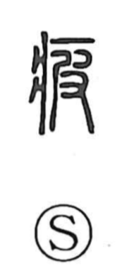

疲

Uncategorized
Kun: tsukareru, tsukarasu | On: hi
to get tired ・ fatigue ・ weariness
Explanation
A phonetic-semantic character: 疒 indicates illness or lying in bed, while 皮 serves as the phonetic element, giving the On reading hi. The Shuowen glosses it as “to become worn out,” and in use it expresses “to get tired” and a state of languor or listlessness. Shirakawa also notes that characters sharing this hi/hai phonetic lineage—such as 病 (hei), 罷 (hai), and 憊 (hai)—tend to cluster around meanings of fatigue, a pattern he connects to an ancient rough-breathing sound group.